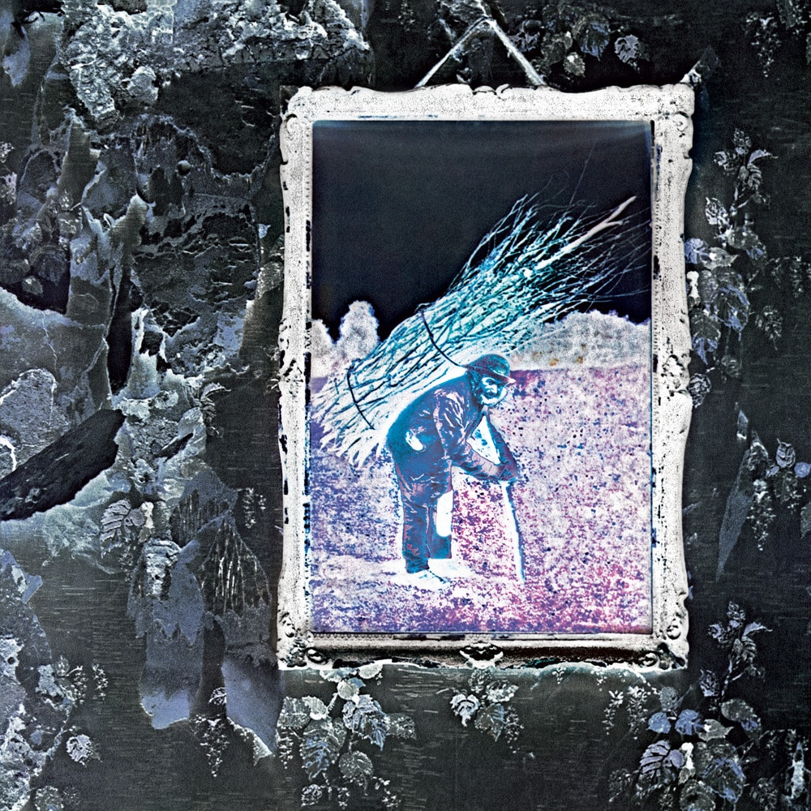

STAIRWAY TO HEAVEN

Led Zeppelin IV Album Art
"Stairway to Heaven" is the fourth track in the untitled fourth album by British rock group Led Zeppelin. "Stairway" is known as the greatest Led Zeppelin song ever, and may quite possibly be the greatest rock song ever written. Guitar World ranks the "Stairway" guitar solo as the best of all time.